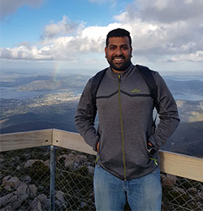
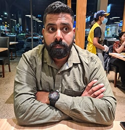
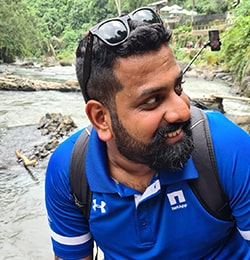
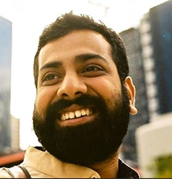

About Me
Along with a budding interest in Human-Centred Design, I am an experienced marketing professional with experience in the Technology, Media, Sports, and the Government sector.
As a creative, I’m interested in producing impactful and unique short-format digital content and photography.
As a professional, I excel at marketing partnerships, sponsorships, audience engagement and strategic communication.
As a human, I love watching and dissecting stats from any kind of sport, high intensity training, world of politics, whiskeys of the world and travel(29+ countries and counting…)
As a professional, I excel at marketing partnerships, sponsorships, audience engagement and strategic communication.
As a human, I love watching and dissecting stats from any kind of sport, high intensity training, world of politics, whiskeys of the world and travel(29+ countries and counting…)



